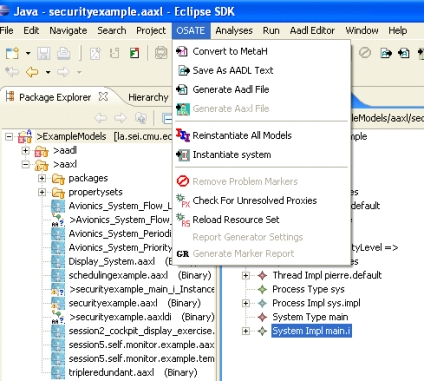
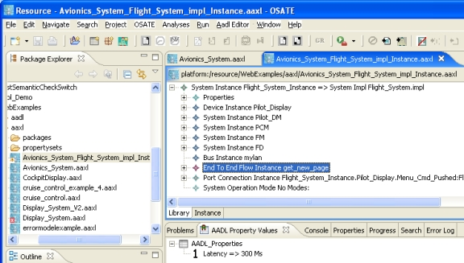

Previous
Next
Previous
Next 
| 7.5 Creating and Working with AADL Instance Models |
An AADL instance model represents a system instance as described in the AADL standard
document. An AADL instance model can be generated from a declarative AADL model by
specifying a system implementation as the root of the system instance. This is done by (1)
selecting a system implementation in the AADL Object Editor and (2) invoking the “Instantiate
system” ( ) command in the toolbar or invoking the “OSATE > Instantiate system” command
as shown in Figure 22. This results in an AADL instance model XML file being created. The
file name of this file will consist of the name of the original file, the name of the root system type,
and “Instance” separated by “_”. In the case shown in Figure 22, the instance model will be
stored in the file “Avionics_System_Flight_System_impl_Instance.aaxl.”
) command in the toolbar or invoking the “OSATE > Instantiate system” command
as shown in Figure 22. This results in an AADL instance model XML file being created. The
file name of this file will consist of the name of the original file, the name of the root system type,
and “Instance” separated by “_”. In the case shown in Figure 22, the instance model will be
stored in the file “Avionics_System_Flight_System_impl_Instance.aaxl.”

Figure 22: Creating an AADL instance model.
The AADL instance model consists of a hierarchy of component instance objects that represent
the system hierarchy and saves this instance model as a separate XML file. The instance
objects refer to the appropriate model objects in the declarative model they are derived from.
This instance model includes the component instances, feature instances, mode and mode
transition instances, semantic connections in form of port connection instances, access
connection instances, mode transition connection instances, as well as flow specification and
end-to-end flow instances, and locally cached property values for all properties retrieved from
the corresponding object model of the AADL specification. Finally, for modal system
instances all possible System Operation Modes, i.e., possible mode combinations of modal
components, are generated and included in the AADL instance model.

Figure 23: Viewing an instance model and the values of its property associations in the "AADL Property
Values" view.
The instance model can be opened and examined with the Aadl Object Model Editor. In
Figure 23, the editor is open on the previously created instance model, and the subcomponent
instances, end-to-end flow instance, and port connection instance are visible. The AADL
property associations for the end-to-end flow—the currently selected object—are visible in the
“AADL Property Values” view in the bottom right of Figure 23.